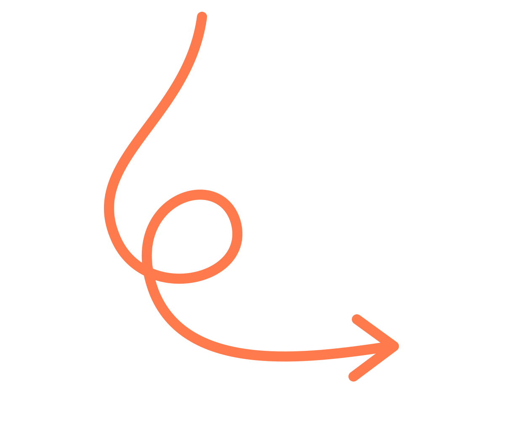
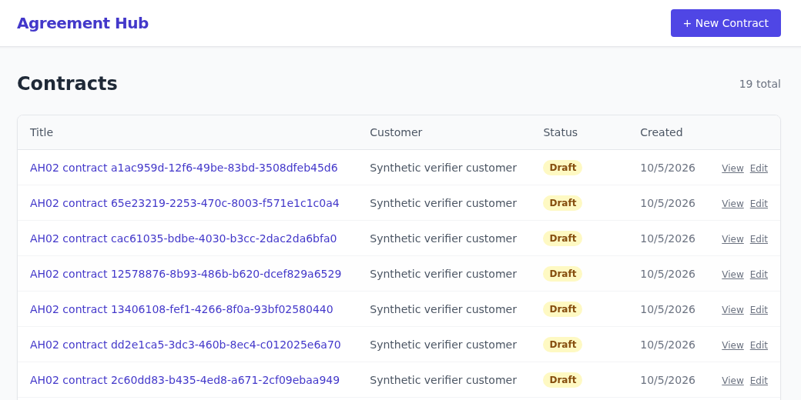
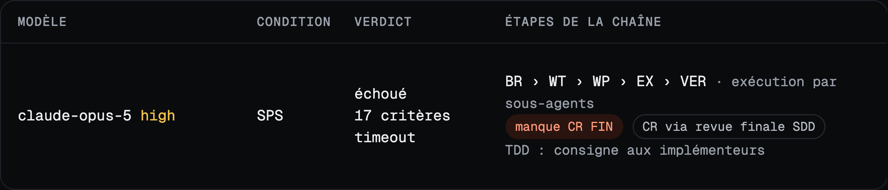
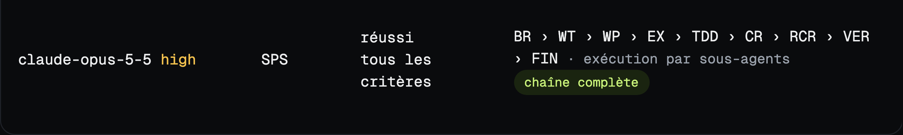
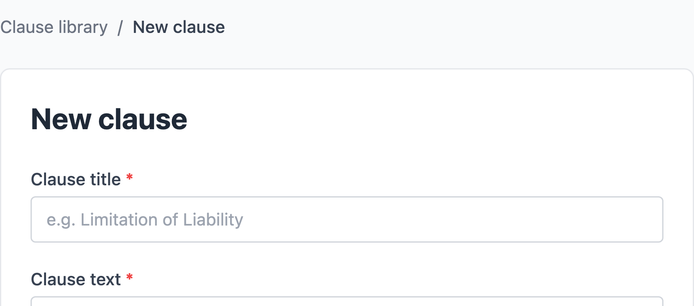
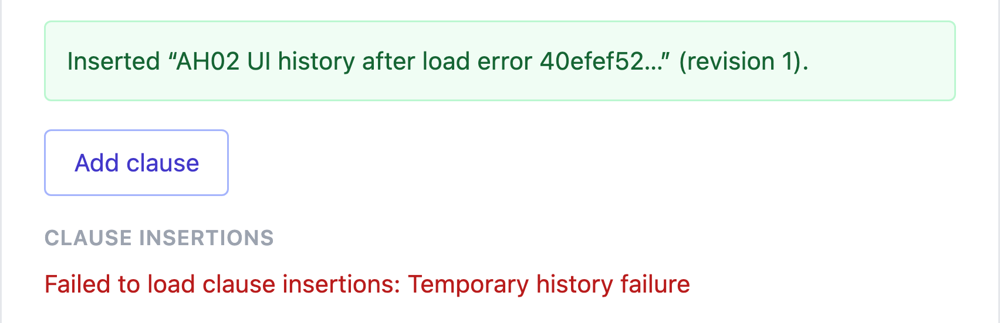
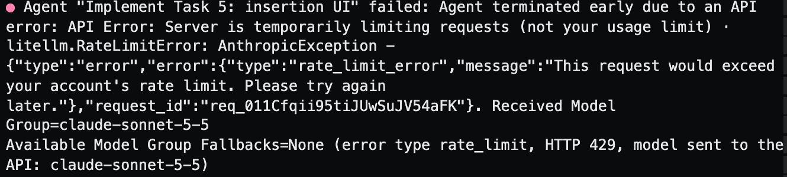
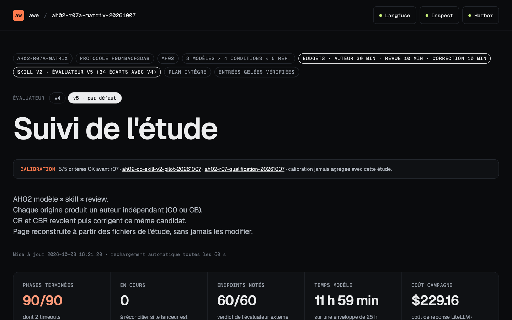

BNP Paribas COE Devops · 13 octobre 2026
D'une vague impression à une mesure fiable.
Jean-Louis Rigau · Manufacture
Ouverture
Vous ajoutez un skill...
Vous faites relire le travail d'un agent par un autre...
Vous changez de modèle...
Et vous trouvez que ça s'améliore !
Mais comment en être sûr ?
Ouverture
Vibe coder & AI-native advisor @ Manufacture
J'aide les entreprises à construire des organisations agentiques, de l'outillage au delivery, en mesurant ce que les agents changent vraiment.

Ouverture
04
2003 · l'idéal théorique
Jürgen Schmidhuber imagine une machine qui réécrit son propre code, mais seulement si elle prouve que c'est mieux.
aujourd'hui · en pratique
Prouver, on ne sait pas. Alors on mesure chaque changement sur de vrais essais, et on ne garde que ce qui améliore vraiment le résultat.
Une mesure ne prouve rien... mais elle remplace les impressions par des faits.
Ouverture
05
2021
HumanEval
Du code qui passe des tests.
2023
SWE-bench
De vraies issues, dans des dépôts publics.
2024
AI Agents That Matter
Mesurer aussi le coût et la reproductibilité.
2025
SWE-bench Pro
Des tâches longues, sur 41 dépôts actifs.
2025
Étude METR
Des devs 19 % plus lents avec l'IA, qui se croyaient 20 % plus rapides.
2026
Effet scaffold
Le harnais, une variable cachée des classements.
Les benchmarks le montrent : le workflow compte. Mais pour savoir si le nôtre s'améliore, il faut le mesurer sur nos propres tâches.
partie 1
préparer
Une application, le choix d'un use case, des critères d'acceptation.
mesurer
S'outiller, observer et comparer chaque run.
évaluer
Se poser les bonnes questions.
Partie 1 · La mesure — préparer
07

Agreement Hub au départ · React, Express, SQLite, 24 tests (TU + Playwright)
le use case · AH02
Une bibliothèque de clauses : les créer, les archiver, les insérer dans un contrat avec leur provenance.
exigence clé
Aucun doublon, même en cas de retry.
19 critères d'acceptation
L0
1
le CRUD des contrats existant reste intact
L1
8
créer, lister, éditer une clause, ses révisions
L2
3
archiver, restaurer, filtrer
L3
7
prévisualiser, insérer avec provenance, retry sans doublon
Ce que « réussir » veut dire est fixé avant le premier run, et vérifié comme un utilisateur.
Partie 1 · La mesure — préparer
08
le workflow de départ
Implémenter
L'agent code la fonctionnalité.
+ skill
review
Relire
Un autre agent, sans le verdict.
Corriger
Une nouvelle session vérifie la review et corrige.
4 configurations comparées
C0
agent seul
CB
+ skill
CR
+ review
CBR
les deux
puis itérer sur le skill
Un skill qui aide l'agent à transformer l'énoncé en vérifications observables.
skill v1
Une matrice de vérification
→ aucun gain
skill v2
Des contre-exemples ciblés
→ retry testé, aucun gain
skill v3
Exécuter, pas cocher
→ testé seulement en pilote
Écrire, mesurer, corriger, recommencer : un skill se construit par itérations.
Partie 1 · La mesure — mesurer
09
étude r07a
le skill et la review font-ils mieux que l'agent seul ?
3 × 4
modèles × workflows
× 5
répétitions
60
résultats notés
Plan d'étude
construit avec un agent, puis figé
·
Harbor (orchestrateur)
Taxiway
un lab dédié et isolé par phase
· Claude Code
· gateway LiteLLM
· traces Langfuse
· enregistrement
Évaluateur
critères d'acceptation, analyse déterministe sans modèle
v3
v4
v5
·
Restitution
une page par étude, résultats et preuves
▶ VIDÉO · Une étude : le plan, un run, son verdict, son enregistrement
Partie 1 · La mesure — évaluer
question 1 · mon skill et ma review font-ils mieux ?
11
≈ 0
critère gagné avec le skill, v1 comme v2
0 à 2 / 5
essais réparés par la review, sans régression
+2,7 à 3,7 $
par essai pour la review, chez Opus 4.8 et Opus 5
C0
agent seul
CB
+ skill
CR
+ review
CBR
les deux
Opus 4.8
0/5
5,65 $
0/5
5,95 $
0/5
8,38 $
0/5
8,69 $
Opus 5
0/5
7,26 $
0/5
7,84 $
2/5
10,62 $
2/5
11,56 $
Opus 5.5
4/5
2,60 $
2/5
2,92 $
4/5
3,11 $
2/5
3,47 $
étude r07a
évaluateur v5. Essais réussis sur 5, puis coût moyen par essai, revue et correction comprises.
Partie 1 · La mesure — évaluer
question 2 · pourquoi si peu ?
12
le skill
12/15
essais avec skill testent le retry après une modification (0/15 sans)
0/3
réussissent quand le test attend la mauvaise valeur
Il fait tester le bon cas. Mais si le résultat attendu est faux, le test valide le bug.
la review
12/16
bugs de retry signalés
0/22
historiques bloqués signalés quand le modèle relit son propre code
Un défaut qu'on montre au relecteur est presque toujours réparé. Un défaut qu'il doit trouver seul, 1 fois sur 9.
Partie 1 · La mesure — évaluer
question 3 · et un workflow public, prêt à l'emploi ?
13
SP · installé tel quel
L'agent choisit de s'en servir. Opus 4.8 n'invoque aucun skill dans 2 essais sur 10.
SPS · chaîne complète demandée
Seul Opus 5.5 la suit en entier, 7 fois sur 10.
étude r08
un essai par ligne


Partie 1 · La mesure — évaluer
question 3 · et un workflow public, prêt à l'emploi ?
14
étude r08
essais qui passent tous les critères, coût moyen par essai · 90 essais · plan d'analyse écrit avant les résultats
sans workflow
SP · tel quel
SPS · chaîne complète
Opus 5.5
7/10 · 2,9 $
8/10 · 5,5 $
10/10 · 13,5 $
Opus 5
0/10 · 7,7 $
0/10 · 23,2 $
0/10 · 22,9 $ · 10 timeouts
Opus 4.8
0/10 · 5,3 $
0/10 · 11,4 $
0/10 · 26,7 $
Aucun gain détecté sur le taux de réussite, pour 2 à 5 fois le coût. Un critère, le retry qui renvoie la réponse d'origine, bloque Opus 4.8 et Opus 5 dans les 60 essais.
▶ VIDÉO · Superpowers : la chaîne de skills, essai par essai
Partie 1 · La mesure — évaluer
question 4 · et si je change de use case ?
16
AH03
circuit d'approbation des contrats (même application, évaluateur dédié)
réussites
ce qui bloque
Opus 5.5
4 sur 5
réponse perdue, 1 fois
Opus 4.8
2 sur 3
soumission, double clic
Opus 5
0 sur 3
réponse perdue, nouvelle soumission
Sur AH02 : Opus 4.8 et Opus 5 à égalité, 0/10.
Sur AH03 : Opus 4.8 passe devant Opus 5.
Le point dur reste le même : les chemins d'erreur. Mais les résultats d'un use case ne se transposent pas à un autre. Il faut re-mesurer, avec un évaluateur écrit pour ce use case.
partie 2
construire
L'énoncé, une implémentation de référence, puis éprouver l'évaluateur.
se tromper
Un code conforme refusé, une faute acceptée.
s'améliorer
Sans regarder les scores. Chaque erreur ramène au début.
Partie 2 · La difficulté à mesurer — construire
18
AH02
évaluateurs v4 et v5
concevoir
Un énoncé public, une implémentation de référence qui le respecte, et un évaluateur externe. Chaque contrôle cite sa phrase de l'énoncé.
éprouver
Calibration
26
contrôles de variantes correctes et de fautes
Mutation
36/36
mutants du code de référence détectés
Autres modèles
127
trouvailles en 9 sessions
Aucune méthode ne suffit seule : chacune couvre les angles morts des autres.
Partie 2 · La difficulté à mesurer — se tromper
19
il refuse un code conforme

« Clause title * » refusé à cause de l'astérisque : 36 échecs comptés à tort.
il laisse passer une faute

L'historique reste bloqué après une erreur de chargement. Invisible jusqu'à ce que d'autres modèles cherchent les failles de l'évaluateur.
Un score ne dit pas qui s'est trompé : l'agent ou l'évaluateur.
Partie 2 · La difficulté à mesurer — s'améliorer
20
plan figé
énoncé, prompts, skill et évaluateur, empreinte vérifiée
verdict caché
les agents ne voient jamais l'évaluateur
rien d'écrasé
chaque version de l'évaluateur garde ses verdicts
une seule étude
jamais deux protocoles mélangés
pannes écartées
rejouées sans regarder le score

Une panne d'API ressemble à un agent qui échoue.
Un score ne se négocie pas : ni l'agent mesuré, ni celui qui mesure ne doit pouvoir l'arranger.
Partie 2 · La difficulté à mesurer — s'améliorer
21
trois versions de l'évaluateur
évaluateur v3
Il laissait passer des fautes
évaluateur v4
Il refusait un code conforme
évaluateur v5
Il voit l'historique bloqué
étude r07a
mêmes candidats, rien de relancé · la conclusion bouge
évaluateur v4
évaluateur v5
Opus 5.5 sans skill : essais qui passent tous les critères
5/5
4/5
Opus 5.5 avec skill : essais qui passent tous les critères
5/5
2/5
verdict sur le skill
neutre
défavorable
Le v5 voit l'historique bloqué, plus fréquent avec le skill.
Un résultat n'est fiable que si l'évaluateur l'est.
▶ VIDÉO · La même étude notée par l'évaluateur v4, puis v5
Clôture
à retenir
Mesurez sur vos tâches
Le benchmark ne dit rien de votre workflow.
Un skill doit gagner sa place
Il peut coûter sans rien apporter.
Re-mesurez à chaque changement
Nouveau modèle, nouveau use case : ce qui aidait peut nuire.
Évaluez votre évaluateur
Il se trompe aussi, dans les deux sens.
et demain
Cette boucle, mesurer puis garder ce qui fait ses preuves, des agents la feront seuls. Il leur faudra le même évaluateur éprouvé et les mêmes garde-fous.
merci
Jean-Louis Rigau · Manufacture

Prochainement inclus dans Taxiway
taxiway.sh